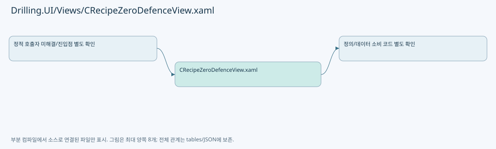

Markdown 원문 · Git 원본
Drilling.UI/Views/CRecipeZeroDefenceView.xaml
| 항목 | 내용 |
|---|
| 원본 저장소 | https://github.com/kjuws10-rgb/A3Drilling.git |
| 원본 Commit | 5aee8e58439c9b455cae7c9593c9be986c3e682e |
| 원본 SHA256 | b84943075a7eacf71b08226cc94113c216b79999d94646ac1e6aa29c80408a64 |
| 파일 분류 | code |
| 원본 크기/행 | 15,948 bytes / 134 physical lines |
| 인코딩 | utf-8-sig |
| 검토 범위 | 구문/부분 의미 분석에서 추출한 사실. 동작·물리 단위·실장비 합격을 보증하지 않습니다. |
| 원본 링크 | 고정 Commit 원본 |
파일의 역할과 읽는 순서
WPF 화면·사용자 명령·표시 상태를 구성합니다. XAML 이벤트와 코드 비하인드, RootView의 조립 경로를 함께 추적합니다.

화면 구성과 코드 비하인드 연결
| 항목 | 추출 값 |
|---|
| 코드 비하인드 후보 | Drilling.UI/Views/CRecipeZeroDefenceView.xaml.cs |
| 이름 있는 요소 | ZeroGroupCards, ZeroCellGrid, CellBox, ZeroSelectionLabels, ZeroShotGrid, ShotBox, ZeroHeadGrid, ZeroBeamGrid |
| 이벤트 개수 | 0 |
| Binding 표현 개수 | 74 |
| Binding 표현 |
|---|
| SelectCountCommand |
| IsTwo |
| SelectCountCommand |
| IsFour |
| ClearGroupCommand |
| Summary |
| GroupCards |
| Background |
| Foreground |
| Number |
| DataContext.SelectGroupCommand, RelativeSource={RelativeSource AncestorType=UserControl |
| Name |
| Detail |
| BackToGlassCommand |
| PreviewTitle |
| GlassVisibility |
| PreviewCanvasHeight |
| PreviewImage |
| GlassFrame.CanvasLeft |
| GlassFrame.CanvasTop |
| GlassFrame.Width |
| GlassFrame.Height |
| Cells |
| Bounds.X |
| Bounds.Y |
| Bounds.Width |
| Bounds.Height |
| Number |
| CanOpen |
| Detail |
| DataContext.SelectCellCommand, RelativeSource={RelativeSource AncestorType=UserControl |
| SelectedHeads |
| HasSelection |
| IsUnavailable |
| SelectionLabels |
| PreviewCanvasHeight |
| DataContext.PreviewCanvasHeight, RelativeSource={RelativeSource AncestorType=UserControl |
| Leader |
| Left |
| Top |
| Width |
| Text |
| FontSize |
| ShotRows |
| ShotVisibility |
| Shots |
| Background |
| CanSelect |
| Detail |
| Key |
| DataContext.SelectShotCommand, RelativeSource={RelativeSource AncestorType=UserControl |
| Label |
| HeadRows |
| Head |
| GroupNo |
| Cell |
| Shot |
| Beam |
| State |
| Tooltip |
| IsSelected |
| CandidateText |
| Beams |
| Background |
| Foreground |
| CanSelect |
| Detail |
| Number |
| DataContext.SelectBeamCommand, RelativeSource={RelativeSource AncestorType=UserControl |
| Name |
| Coordinates |
| TimingSummary |
| Status |
| StatusBrush |
원문 전체 주석 해설본
원본 모든 행과 행별 해설 보기
원본을 빠뜨리거나 임의로 줄이지 않았습니다. L000001 | 표시는 원본 행 번호, // 해설은 별도 설명입니다. 실행용 소스가 아닌 문서입니다.
수정·재검증 체크
• 원본 Commit과 현재 작업 파일 SHA가 같은지 먼저 확인합니다. 다르면 이 문서를 과거 버전 자료로 취급합니다.
• 선언·직접 호출·이벤트/인터페이스 경계·설정 소비를 함께 확인합니다. 정적 연결의 빈 곳을 정상 경로로 추정하지 않습니다.
• 저장 형식/단위/식별자·재시도·취소·예외·롤백에 영향을 주는 변경은 상세 해설장과 호출자를 다시 검토합니다.
• 도구의 구문 추출과 별도 정적 추적 해설, 실제 빌드·시뮬레이션·실장비 검증 결과를 분리합니다.